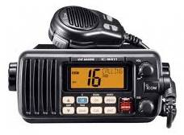
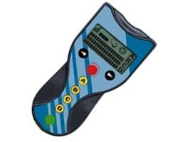

Base Nautique Des Trois Frontières
CRR- Certificat restreint de radiotéléphoniste
Personne n’est à l’abri d’un pépin en navigation, apprenez à vous servir d’une VHF avec ASN ; liaisons de 30 à 50 milles (fixe à 25 watts) et 5 à 12 milles (portable 1 à 5 watts) selon la hauteur des antennes.
Utilisée par la majorité des plaisanciers en petite et grande croisière, la VHF ASN est ce qu’il vous faut pour votre sécurité.
Pour utiliser une VHF en mer ou sur les fleuves et canaux.
Au delà de la préparation à l'examen, cette formation vous permet d'apprendre à utiliser de façon complète votre VHF - ASN et inclus la pratique des dernières normes ASN et SMDSM.
Age minimum requis : 16 ans.
L'examen comporte uniquement une partie théorique :

Épreuve du CRR maritime valable également sur les voies fluviales
Questionnaire à choix multiple (QCM)
45 minutes pour répondre à 20 questions.
Pour réussir l'examen, la moyenne est nécessaire dans chaque thème. Vous pouvez ainsi avoir au total dix bonnes réponses et être éliminé.
Questionnaire à choix multiple (QCM)
45 minutes pour répondre à 20 questions.
Pour réussir l'examen, la moyenne est nécessaire dans chaque thème. Vous pouvez ainsi avoir au total dix bonnes réponses et être éliminé.
Les thèmes abordés :
- Généralités du service mobile maritime (6 questions)
- Radiotéléphonie VHF (6 questions)
- Utilisation pratique de VHF ASN (8 questions)
Remarque :
Depuis le 1er mars 2011, les titulaires du permis côtier et/ou du permis fluvial peuvent utiliser les VHF portables et fixes ASN sans avoir passé le CRR.